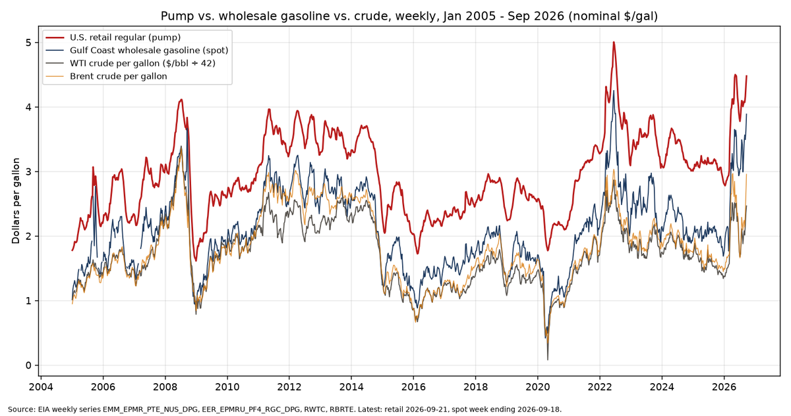
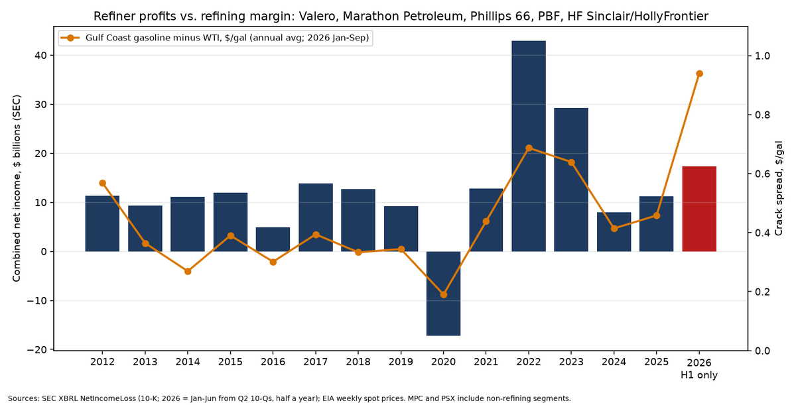

Watch
Gas Price Gap Tracker
Why pump prices stay high while crude is far cheaper than in 2008: each cent of a gallon traced to EIA, SEC, CFTC and FEC records, with the data points that do not fit the documented explanations.
Checked Sep 24, 2026. Items that rest on news reports alone are in grey Reported-only boxes and are not counted.
✓ Verified by SwampForce means SwampForce checked the item against a primary record (government document, court filing, official results, or the person's or group's own words) on Sep 24, 2026.
Reported only items rest on news reports alone. They are kept in separate grey lists, are not stamped, and are not counted in any figure on this page.
How to read this page. A red flag is a number that does not fit the documented explanations. It is not a finding of wrongdoing, and no crime is implied without a charge or finding. Raw data for every figure: Gas Price Gap workbook (XLSX). Background: Energy: gas vs. 2008 and the Iran war.
Where the money in a gallon goes today ✓ Verified by SwampForce
Latest week: U.S. regular was $4.478/gal on Sep 21, 2026 (EIA ↗). For the week ending Sep 18, WTI crude averaged $103.54/bbl (EIA ↗), Brent $124.15 (EIA ↗), and Gulf Coast wholesale gasoline $3.888/gal (EIA ↗). Daily WTI was $96.41 on Sep 22. The July 2008 records were $145.31 WTI and $4.114 gas.
We split the gallon the same way EIA does. Crude is WTI ÷ 42. Refining is wholesale gasoline minus crude. Taxes are EIA's average federal + state gasoline tax, 52.16¢ for Jul 2026 (EIA fueltaxes ↗). Distribution & stations is whatever is left. These are our calculations from EIA weekly prices. EIA's official monthly breakdown stops at May 2026 (EIA pump components ↗).
| Piece of a gallon | Week of Jul 7, 2008 | Week of Sep 21, 2026 | Change |
|---|---|---|---|
| Crude oil (WTI ÷ 42) | 339.3¢ | 246.5¢ | −92.8¢ |
| Refining (Gulf wholesale − WTI) | −2.2¢ | 142.3¢ | +144.5¢ |
| Taxes | 40.3¢ | 52.2¢ | +11.9¢ |
| Distribution, marketing & stations | 34.0¢ | 6.8¢ | −27.2¢ |
| Pump price | $4.114 | $4.478 | +36.4¢ |
How much of today's $4.48 is explained by the records?
| Slice of today's price | ¢/gal | Share | Status |
|---|---|---|---|
| Crude oil | 246.5 | 55% | Market price (EIA) |
| Taxes | 52.2 | 12% | Set by law. Federal 18.4¢ has not changed since 1993; states raised theirs |
| Normal refining margin (2025 pre-war average, Gulf wholesale − WTI) | 45.8 | 10% | Normal level, about 10¢ above the 2010–2019 average of 36.1¢. That fits roughly 5% less U.S. refining capacity than in 2020 (EIA ↗) |
| Distribution & stations | 6.8 | 2% | Thin right now. Retail lags the September wholesale rise |
| War shortage premium (gasoline over Brent, above its 2025 level: 93.2¢ vs 37.2¢) | 56.0 | 12.5% | Cause documented, size not measured. The IEA reports record Atlantic Basin margins and Gulf product exports down nearly 60% (IEA ↗). U.S. refineries run near 98% and gasoline stocks are low. No agency has put a number of cents on each cause |
| Brent–WTI gap above normal ($20.61/bbl vs $3.60 in 2025) | 40.5 | 9% | Not explained by any primary record we located. U.S. gasoline sells at world (Brent-linked) prices while U.S. inland crude is about $20 cheaper. Refiners that buy imported or Brent-priced crude pay that cost. Refiners that run WTI-priced crude keep the difference (our reading) |
Bottom line: About 79% of today's price is crude, taxes, a normal refining margin and station costs. About 12.5% is a war-shortage premium whose cause is documented but whose size nobody has measured. About 9% (40¢) is the unusually wide gap between world and U.S. crude prices. No primary record we found explains that gap, and it is the best lead for anyone asking where the extra money goes. The whole increase since 2008 sits in refining. Taxes are up 12¢, and the station slice is currently lower. After inflation, gas is still below the 2008 peak: $4.114 then equals about $6.27 today (BLS CPI-U ↗).
Caveats: the Gulf Coast is the cheapest U.S. wholesale hub, so this national split slightly overstates station margins in high-cost regions. EIA's own May 2026 breakdown shows refining at 97.2¢ (21.7%) and distribution at 66.3¢. Its crude slice implies about $97.6/bbl, while EIA's revised May refiner crude cost is $104.62 (EIA RAC ↗). Using the revised cost would move about 17¢ from refining to crude.


Red flags: data that do not fit the easy explanations ✓ Verified by SwampForce
1. Record wholesale margin over U.S. crude. Gulf Coast gasoline minus WTI reached $1.549/gal in the spot week ending Aug 28, 2026. That is the highest weekly value from 2005 to 2026. The previous high was $1.386 in June 2022, and in July 2008 it was −$0.022 (EIA gasoline ↗, EIA WTI ↗). The documented cause is the global product shortage (IEA ↗).
2. Wholesale gasoline did not follow crude down. From Jun 1 to Jul 6, 2026, WTI fell 54.7¢/gal and Brent 65.1¢. Gulf Coast wholesale gasoline fell only 11.0¢, while U.S. retail fell 52.8¢. The retail-minus-wholesale spread dropped from $1.157 to $0.739. The DOJ and FTC wrote on Jul 3 that too much of the crude decline was being "withheld" (DOJ/FTC letter ↗). The EIA numbers put the hold-up at the wholesale/refining stage, not at stations. The letter is a statement of concern. No finding.
3. The Brent–WTI gap. $20.61/bbl (49¢/gal) in the latest week, compared with $3.60 on average in 2025 (EIA Brent ↗). The widest weekly gap on record was $28.33 in Sep 2011. We found no agency explanation for the 2026 widening.
4. Refiners paid out almost all their profit while capacity shrank. Valero, Marathon Petroleum and Phillips 66 reported $81.7B of net income for 2022–2025. In the same years they spent $61.5B on buybacks and $18.1B on dividends, which is 97% of net income (SEC 10-Ks: Valero ↗, Marathon ↗, Phillips 66 ↗). U.S. operable capacity fell from 18,976 to 18,027 thousand b/d between Jan 2020 and Jun 2026 (EIA ↗). Five refiners (those three plus PBF and HF Sinclair) earned $17.3B in the first half of 2026 alone. These are legal choices. No regulator has found that capacity was withheld to raise prices.
5. Speculators are unusually long gasoline, not crude. Managed-money funds held a net long of 92,848 RBOB gasoline contracts on Sep 8, 2026. That is 25.4% of open interest and the highest since April 2012, above the 2008 peak (62,535; 23.3%) and the 2022 peak (81,212; 24.8%). In crude they are modest: 111,731 contracts (5.8%), against 279,511 (15.2%) in 2022 (CFTC COT ↗). Large positions are legal, and positioning is not manipulation. We found no 2026 CFTC manipulation case.
6. California's unexplained remainder. California's $6.003 is $1.525 above the U.S. average. Higher state tax accounts for 39.9¢ (73.64¢ vs the 33.76¢ state average). The low-carbon fuel standard adds about 18¢ and cap-and-invest about 23¢ (CEC FAQ ↗). Los Angeles wholesale runs 23.5¢ above the Gulf Coast. That leaves about 48¢ unexplained by these records. California's market watchdog reports a 31¢ branded-vs-unbranded spread in California against 6¢ elsewhere. Its inquiry is open and it has published no findings (DPMO, Jun 2026 ↗).
7. Exports do not explain the 2026 jump. Gasoline exports since March averaged 899 thousand b/d, compared with 940 thousand in Dec 2025–Feb 2026 (EIA ↗). Exports are structurally high: 172 thousand b/d of finished gasoline in 2008 vs 778 thousand in 2025. That ties U.S. prices to world prices, but exports did not surge during the war. Gasoline stocks of 206.0 million barrels (Sep 18) are the lowest for mid-September since 2012 (EIA ↗).

Refining ownership and Colorado ✓ Verified by SwampForce
Concentration: The five largest refining companies hold 52.1% of U.S. crude distillation capacity: Marathon 16.4%, Valero 12.3%, ExxonMobil 10.8%, Phillips 66 6.7% and Chevron 5.8% (EIA Refinery Capacity Report 2026, Table 5 ↗). By region, the top five hold 99% of East Coast (PADD 1) capacity, 58% in the Midwest, 62% on the Gulf Coast, 72% in the Rocky Mountain region (PADD 4) and 77% on the West Coast.
- Colorado is not paying a premium now. Colorado regular was $4.257 on Sep 21, 22¢ below the U.S. average and 25¢ below the Rocky Mountain average of $4.51 (EIA Colorado ↗, EIA PADD 4 ↗). From 2005 to 2025 it averaged 7.9¢ below the U.S., and in 2026 it has averaged 16.4¢ below.
- Suncor's profits are reported company-wide in Canadian dollars, and Commerce City is not broken out. Net income was C$9.08B in 2022 and C$5.92B in 2025, with C$3.13B of buybacks and C$2.81B of dividends in 2025 (SEC 40-F for 2025 ↗; 2022 figures ↗).
Investigations: findings vs statements ✓ Verified by SwampForce
| Date | Body | Type | What it says |
|---|---|---|---|
| May 2006 | FTC ↗ | Finding | No illegal market manipulation after Katrina |
| Apr 2012 | CFTC ↗ | Finding (consent order) | Optiver manipulated NYMEX crude, heating oil and gasoline futures in 2007; $14M total |
| Jul 2024 | California AG ↗ | Settlement, not proven | Vitol/SK paid $50M over alleged 2015 spot manipulation |
| Aug 2025 | California Energy Commission ↗ | Decision | No refiner-margin cap or penalty; zero SB X1-2 penalties |
| Jun 2026 | California DPMO ↗ | Open inquiry | About 20 stations contacted; no findings |
| Jul 3, 2026 | DOJ + FTC ↗ | Statement | "Closely monitoring"; urges state AGs to investigate. No case or charge |
| 2026 | Colorado AG, CFTC, FBI | None located | No fuel-price case, charge or subpoena found |
No government body has found that 2026 gasoline prices involve illegal conduct.
Political money: both parties, same test ✓ Verified by SwampForce
Oil & gas industry, all sources (compiled from FEC filings by OpenSecrets ↗):
| Cycle | To Democrats | To Republicans | Split D / R |
|---|---|---|---|
| 2020 | $13,366,122 | $70,040,001 | 16.0% / 83.8% |
| 2022 | $9,726,060 | $41,100,819 | 19.1% / 80.8% |
| 2024 | $9,207,146 | $69,822,551 | 11.6% / 88.2% |
| 2026 | not yet published | not yet published |
Refiner and fuel-industry PACs, direct contributions to candidates (primary FEC bulk data ↗: Valero, Marathon Petroleum, Phillips 66, HF Sinclair, AFPM and API PACs; PBF and Suncor have no FEC-registered PAC):
| Cycle | To Democrats | To Republicans | Split D / R |
|---|---|---|---|
| 2020 | $402,000 | $2,230,200 | 15.3% / 84.6% |
| 2022 | $341,800 | $1,917,700 | 15.0% / 84.0% |
| 2024 | $337,000 | $2,326,000 | 12.6% / 87.0% |
| 2026 (to date) | $165,000 | $2,062,000 | 7.3% / 91.4% |
Viral claim checked ✓ Verified by SwampForce
Claim: "EXPOSED: Democrats' Big Oil Payoff Scheme... FBI Subpoenas Incoming." Posted on X by @TrumpNews, byline "Jonathan Gregory," Sep 23, 2026. Rating: Unsupported.
- We found no DOJ or FBI press release, court filing or other record of such subpoenas (DOJ news ↗).
- The same byline appeared on an earlier unsupported "seven FBI agents vs. Pelosi" story.
- The post's price figures roughly match EIA. Its claim that high prices are "not the Iran war" contradicts EIA and IEA data showing a war-driven product shortage (IEA ↗).
- FEC records show oil-industry PAC money going mostly to Republicans, not Democrats.